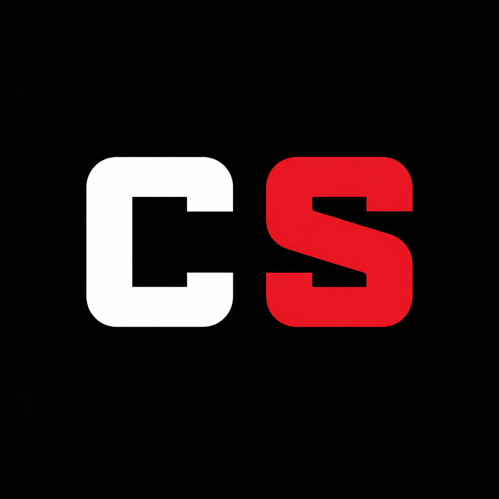
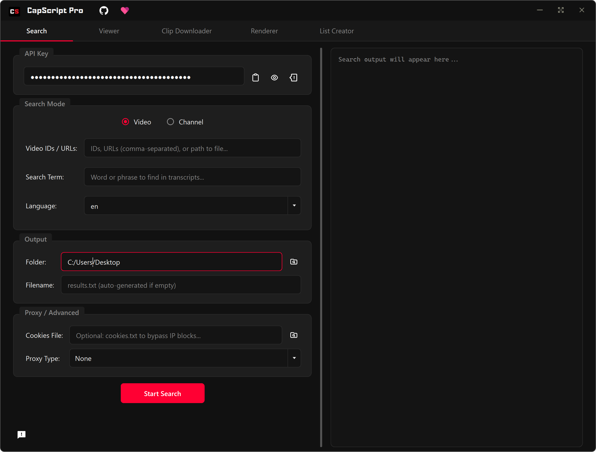
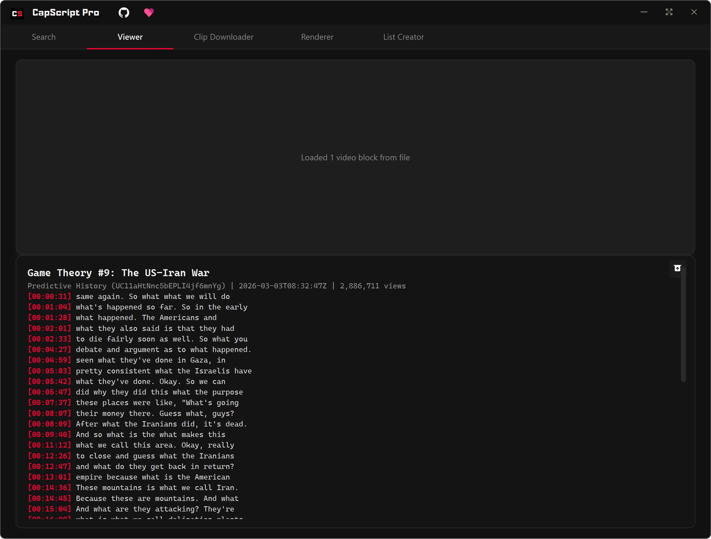
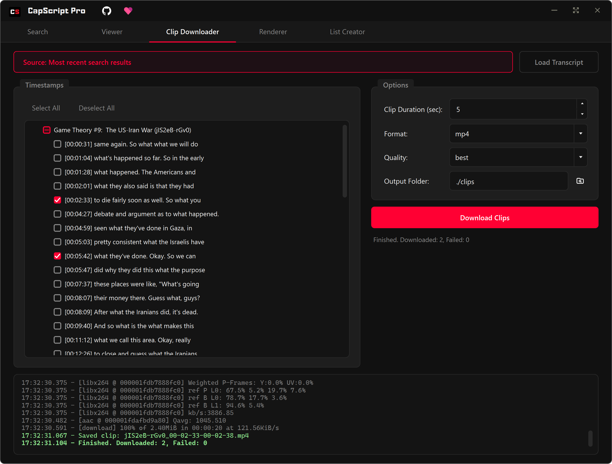
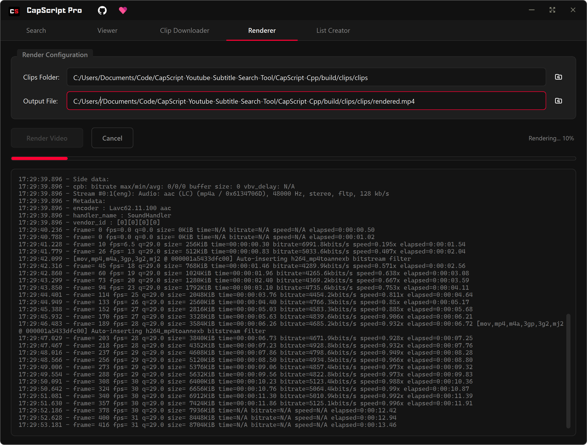
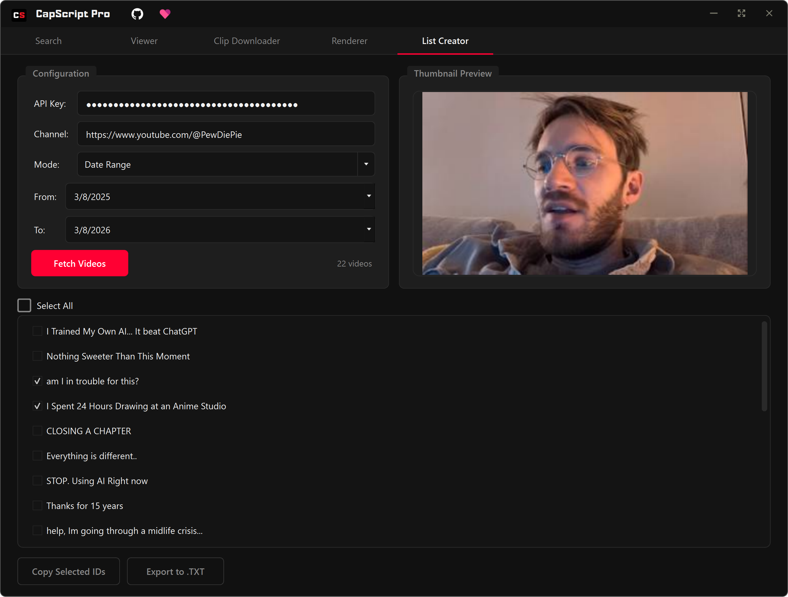

CapScript Pro
An easy YouTube transcript search tool for Windows. Search YouTube subtitles, jump to the right second, and download timestamps into usable clips effortlessly.
Latest release. This software utilizes third-party tools, yt-dlp and ffmpeg. CapScript Pro does not host or distribute these tools but will provide optional functionality to install and manage them from their official sources.
see all available downloads & checksums herePowerful Tools in One Workflow
Everything you need to find the right moments, review transcripts, and clip videos effortlessly.

Find exactly what they said
Search transcripts across entire channels or specific videos to pinpoint the exact moment a topic was mentioned. Save hours of scrubbing through footage by jumping directly to the relevant word.
Review and contextualize
Play back your findings instantly. The Viewer tab synchronizes the transcript with the video, letting you skim the text while effortlessly checking the visual and auditory context.


Extract highlights automatically
Select timestamps from your search results and download short snippets in high quality. Keep your drive clean instead of downloading massive hours-long original streams.
Combine clips efficiently
Merge your downloaded clips into a seamless master track. The built-in Renderer automates FFMPEG processing, giving you a final compilation ready to share or drop into any editor.


Bulk organize your data
Fetch multiple video IDs by channel and date range efficiently. Build custom lists to narrow down search scopes, helping you maintain organized datasets for all your content projects.
Under the Hood
Rebuilt dynamically for maximum performance and a minimal footprint.
Blazing Fast
Native C++ UI ensures instant responsiveness and smooth scrolling through thousands of transcript lines without lag.
Native & Lightweight
Replaced the hefty Python UI dependency with native Qt, drastically reducing distribution size and memory usage.
Embedded Python
Keeps the reliable YouTube API & script fetching engine embedded inside, securely.
Auto-Updates
Receives updates automatically, so it stays up and running.
Proxy & Rate Limiting
Built-in proxy and rate limiting support to handle large-scale operations and prevent API throttling.
Video/Channel Modes
Flexibly search and process channel URLs, video URLs, video IDs, and multiple videos in bulk operations.
Frequently
Asked
Questions
Everything you need to know to get started with CapScript Pro.
Still have questions?Yes, it's open source and free to use. There are no hidden fees or subscriptions. If you find it useful, you can optionally support the project by buying a coffee.
Yes and No—CapScript uses these tools behind the scenes, but it works without them for basic features like search. Some functionality, such as clip downloading, depends on them. If they’re already installed, it will use them automatically; otherwise, it can download them for you if needed.
Absolutely. The C++ Qt Edition uses very little memory and is tailored to run incredibly fast on practically any windows machine.
You can search any public video that provides closed captions, either manually uploaded or auto-generated by YouTube. Unlisted, private, or caption-less videos cannot be searched.
No! It utilizes an intelligent method combined with yt-dlp to download and extract just the tiny specific timeframe you requested—saving massive amounts of local disk space and internet bandwidth.
Not right now. I do plan to support them, but getting it working there has been pretty difficult so far (Linux especially), so I don’t have a timeline yet.
I try to provide fast regular updates that adapt to YouTube's undocumented API changes to keep the app operational, if the app breaks, please be patient.
All available downloads
Loading checksum...
Prefer terminal workflows? Use the CLI mode to run transcript searches in scripts, CI jobs, and automation pipelines.